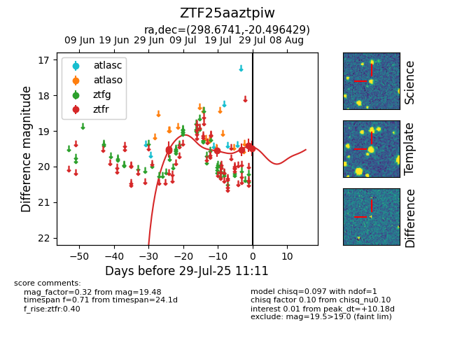

Target ZTF25aaztpiw at 2025-07-29 11:11, see:
FINK: fink-portal.org/ZTF25aaztpiw
Lasair: lasair-ztf.lsst.ac.uk/objects/ZTF25aaztpiw
ALeRCE: alerce.online/object/ZTF25aaztpiw
alt names
ZTF25aaztpiw (ztf,fink)
coordinates:
equatorial (ra, dec) = (298.6741,-20.49643)
galactic (l, b) = (20.7092,-22.75876)
photometry
last ztfr=19.48
6 ztfr detections
